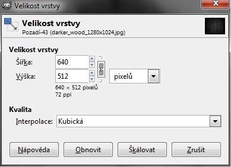
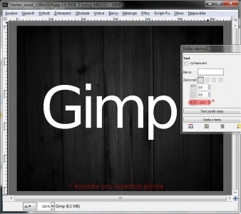
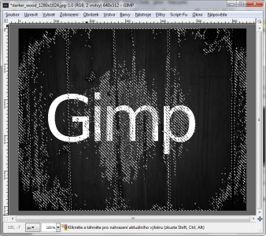
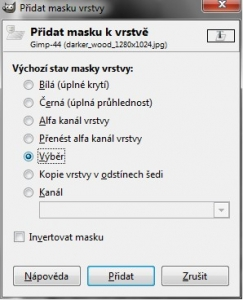

Web je již jen v režimu pro čtení a není možné přidávat nové komentáře nebo dotazy do fóra. Díky za přízeň.
Main menu
You are here
Text ve dřevě
30. August 2010 - 1:00 — Lukáš
Co budeme potřebovat?
-
Texturu dřeva z deviantart.com
1. krok
Otevřeme staženou texturu v Gimpu. Pokud máte, stejně jako já slabší počítač, zmenšete texturu na 50%. To tak, že pravým tlačítkem klepnete na vrstvu s texturou a zvolíte změnit velikost vrstvy. Šířku nastavte na 640px, výška se nastaví automaticky. Potvrďte tlačítkem Škálovat.

{kind=link}
2. krok
Písmem Sans napíšeme nějáký text. Pokud se Vám nelíbí rozestup písmenek, nastavte zápornou hodnotu v kolonce pro rozestup písmenek

{kind=link}
3. Krok
Přepneme se na vrstvu Pozadí a vybereme nástroj "Výběr dle barvy"[Shift + O]. Klepneme do vrstvy abychom dostali např. Takovhle výběr.

{kind=link}
4. krok
Přepneme se zpět na vrstvu s textem. Klepneme na ni pravým tlačítkem a zvolíme "Přidat masku vrstvy". V okýnku, které vyskočí zaškrtneme "Výběr". Potvrdíme tlačítkem Přidat

{kind=link}
Závěr
Nyní už stačí klepnout na Vybrat → Nic a je hotovo :)
Zdroj: Youtube.com
Kategorie:
Web je již ukončen. Nebude zde přibývat žádný nový obsah. Případné dotazy prosím na l.bacovsky(a)outlook.cz
Comments
dotaz
Prosím kde mám stáhnout to
Ježíš to je rozkošné :-) tak
Stáhnout.
Masky a Photo-Paint
Re: Text ve dřevě
Re: Text ve dřevě
Re: Text ve dřevě
Re: Text ve dřevě
Re: Text ve dřevě
Re: Text ve dřevě
Re: Text ve dřevě
Re: Text ve dřevě
Re: Text ve dřevě
Re: Text ve dřevě
Re: Text ve dřevě
Re: Text ve dřevě
Re: Text ve dřevě
Add new comment